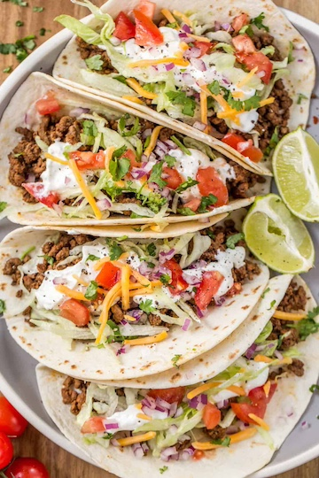

Taco

Now these tacos will keep you full for hours and are perfect for when you're on the cut.
Ingredients
- 6 Oz of cooked protein of your choosing. (I prefer ground beef or chicken breast)
- 2 Mission Carb Balance Tortillas
- 1/4 cup of low fat mexican cheese
- 1/3 cup of guacamole
- 1/4 cup of low fat sour cream
- 1/2 cup chopped iceberg lettuce
Steps
- Heat up tortillas
- Once tortillas are hot to the touch, place 3 oz of cooked protein on each tortilla
- Sprinkle 2 tablespoons of cheese on each taco
- Evenly place guacamole on tacos
- Place 2 tablespoons of sour cream on each taco
- Place 1/4 cup of iceberg lettuce on each taco
- Enjoy your high protein low calorie meal